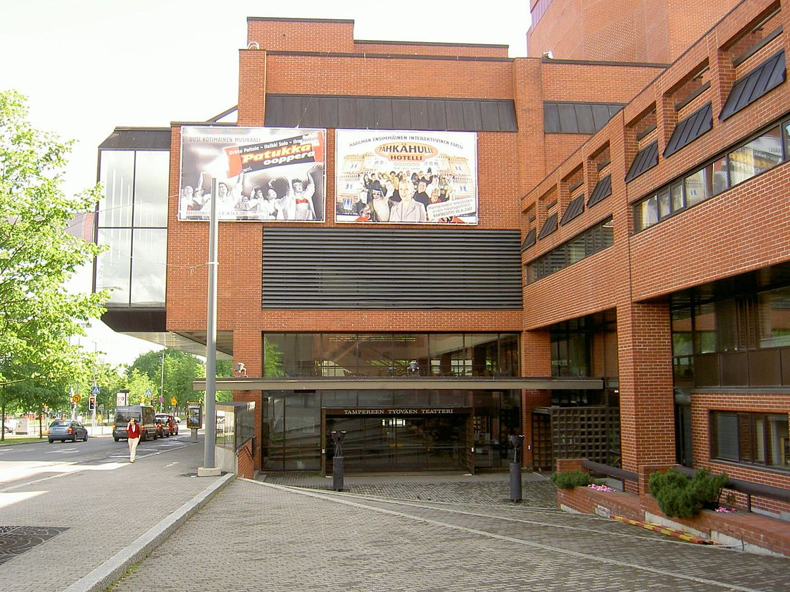

- Medialle
- Uutiskirje
- Palaute
- Kalenteri
- Ohjelmisto
- TTT-Klubi
- Tarjoilut
- Palvelut
- Medialle
- Teatteri
- Lippumyymälät ja liput
- Suuri näyttämö
- Eino Salmelaisen näyttämö
- Kellariteatteri
- TTT-Klubi
- Viidesnättämö/Residenssi
- Näyttelijät
- Henkilökunta
- Missio ja historia
- Rekrytointi
- TTT-ystävät ry
- Yhteiskuntavastuu
Tervetuloa Tampereen Työväen Teatteriin
Tampereen Työväen Teatteri sijaitsee Tampereen kauneimman kadun varrella Hämeenpuistossa.